SSP teaching tool
Carbonator is a simple climate model. Unlike a full climate model that can tell us how climate variables evolve at different locations it can only tell us how a subset of variables change on a global scale (e.g. globally averaged temperature). Carbonator uses only a few hundred lines of computer code and takes a few seconds to simulate centuries of climate system evolution on your computer.
Carbonator is based on the same laws of physics that underpin state-of-the-art climate models (in particular the conservation of energy) and for a limited number of variables will produce very similar results to those models. As such, it is a powerful tool that can be used to explore how the climate system is affected by different factors (like CO2 emissions, volcanoes or changes in the power output of the sun) and how our decisions are likely to affect the climate system in the future.
Based on a set of inputs (that you can modify):
Carbonator will calculate how various climate variables will change over time, including:
The following schematic shows all the components of Carbonator:
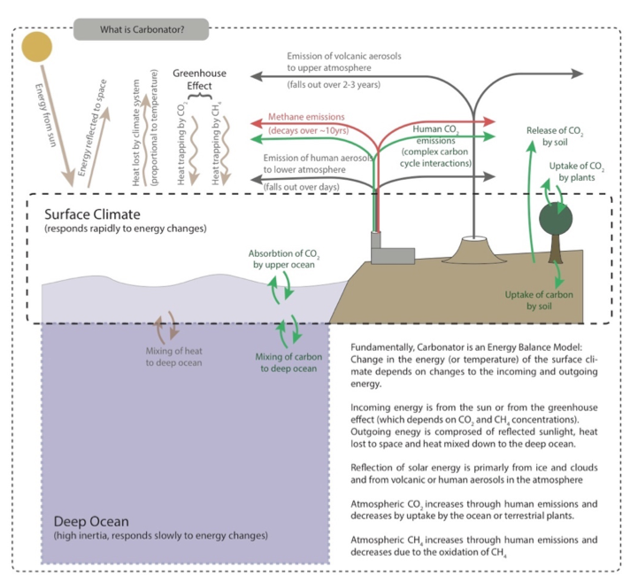
Carbonator is made up of a number of sub-models, that feed information to the main Energy Balance Model.
At the heart of Carbonator (and all climate models) is an energy balance model. This simply means that if we know the energy entering or leaving the climate system, then we can calculate how the energy content (otherwise known as temperature) will change. By making estimates of how energy coming in or out changes in the future then we can predict what will happen to temperature (and other climate variables) in the future.
If there were an increase in the energy entering the climate system (for example if the sun were to get a little stronger), this would very quickly heat up the atmosphere, land surface and upper ocean. It would take much longer for that extra heat to gradually mix down into the deep ocean.
So let’s build a (box) model of the climate system:
Next we need to define some properties of these boxes:
So here is our (two box) model of the climate system:
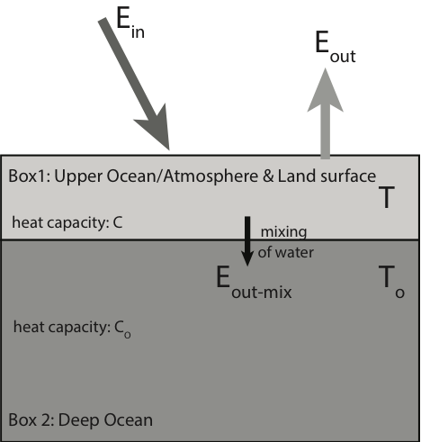
Now we need some equations to describe the temperature changes in the two boxes (one equation for each box).
Change in energy in box 1 each second = Energy coming in each second – Energy going out each second (from the top and bottom of box 1)
The energy in the box (E) [measured in Joules] is the heat capacity of the box (C) multiplied by the temperature of the box (T). Mathematically the change in energy (E) with time (t) is written as:
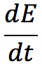
But because E = C × T (and C is a constant, i.e. the heat capacity doesn’t change):
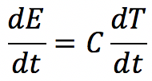
In other words, this says that the change of energy in box 1 (per second) equals the heat capacity of box 1 multiplied by the change in temperature in box 1 (each second).
Putting this all together:
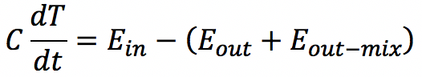
From (3) above, we know that the Eout [measured in Joules per second] is proportional to the temperature of box 1:
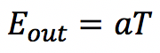
(where a is a constant)
From (4) above, we know that the Eout-mix [also measured in Joules per second] is proportional to the temperature difference between box 1 and box 2:
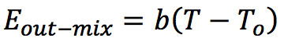
(where b is a constant)
So finally we have:
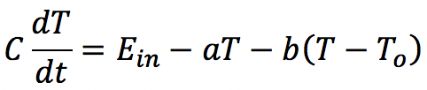
Change in energy in box 2 each second = Energy coming in each second (from the bottom of box 1)
The energy coming in to box 2 is obviously the same as the energy coming out of the bottom of box 1 (i.e. b(T - To)).
So, following similar arguments to box 1 we end up with:
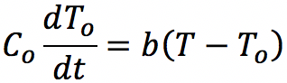
So we have ended up with two equations:
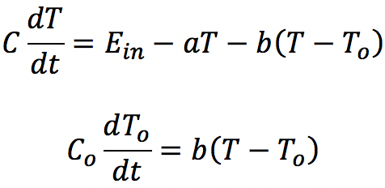
They tell us that if we know the energy entering the climate system (Ein), which may change over time, we can calculate how the temperature of the surface climate (i.e. all the components in box 1) and the deep ocean (box 2) change with time.
NB we also need to figure out the values for the various constants (C, Co, a, b). These can be calculated or figured out by looking at observations of the real world.
The energy entering the climate system depends on multiple factors. Some of the main ones are:
To get Ein we need to sum these different components:
Ein = Esun + Evolcano + Eaerosol + Eco2 + Ech4
Some of these components are hard to measure or estimate directly, so Carbonator uses sub-models (for the carbon cycle and methane) to calculate the CO2 and CH4 terms from emissions, while the remaining terms are specified as radiative forcings from the scenario data.
A model is a way of understanding complex systems or phenomena. For example, models can be used to help us understand the movement of planets around the sun, or how a disease spreads or how the brain works or how the earth’s climate will change in the future.
To construct a model you need to identify the essential components of the system or phenomenon you are trying to model and how the components behave and interact. In science you would then often use mathematical equations or computer code to describe these components and interactions.
A few examples might make this clearer:
Imagine a person on a swing. We would like to understand how fast the swing goes, or how often you go back and forth. This could depend on many factors: the size of the person, the design of the swing, the strength of the wind, the friction in the bearings. But the essential components of this system can be modelled as a ball on a weightless string suspended from a pivot with no friction. The ball is pulled downwards by gravity and upwards by the tension in the string. By mathematically describing this highly simplified version of the person on a swing we can get a good idea of how the swing will move (it won’t be perfect, because in the real world the swing is affected by other factors – like friction, but we can still learn a lot from the simple model).
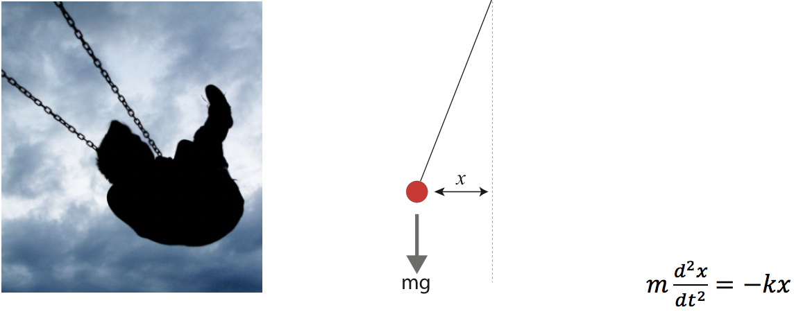
Imagine the earth orbiting the sun. We can model this as two balls (one with the mass of the sun, the other with the mass of earth) rotating around each other and kept together by gravitational attraction. Based on experiments we know that the strength of the gravitational attraction is proportional to the masses multiplied together, and inversely proportional to the square of the distance between them. By describing this model mathematically we can figure out approximately how fast the planet orbits and how far the sun and planet must be from each other. However this model is just an approximation of the real world: interactions with other planets will also be important, space-time is distorted by the massive sun and planet which slightly changes how gravity works (general relativity) and even in space there is some friction.
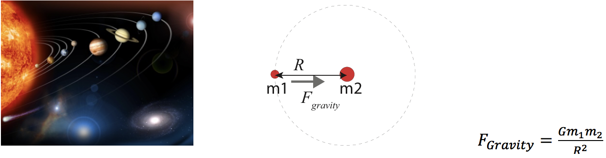
Finally imagine a burner heating up a beaker of water. We can model this as a box with the same heat capacity as the water and a constant input of heat. Conservation of energy tells us the rate at which the temperature of the box increases must be proportional to the energy coming in (and inversely proportional to the heat capacity of the water i.e. it takes longer to heat more water). In the real world the water will heat at different rates, there will be heat losses from the top of the water and from the sides of the beaker and the heating source won’t be perfectly constant, but still our approximation will be able to provide valuable information about how fast the water heats up.
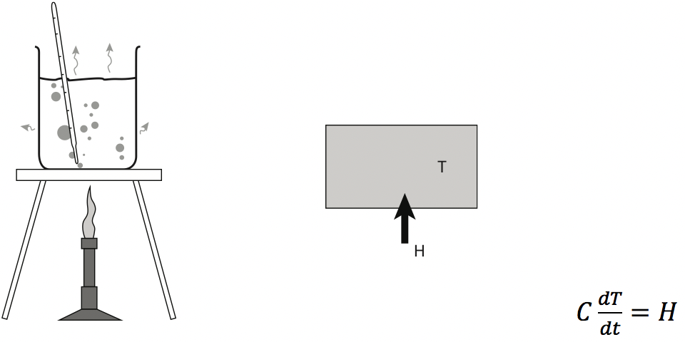
We could improve our final model, by assuming that our box can also lose heat to the surroundings. Let’s assume that the rate at which the box loses heat is proportional to the difference between the temperature of the box (T) and the temperature of the surrounding air (TA) i.e. the hotter the box gets the more heat it loses.
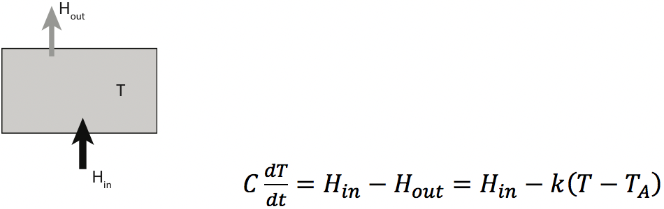
This last type of model is referred to as a box model. The box in this case represents the water. But we simplify the situation and assume that the water is a homogenous box with a single temperature and heat capacity. Carbonator is also a box model that works in a similar way to this example.
A climate model is a simulation of the climate system: the atmosphere, ocean, land surface and cryosphere (ice areas), run on a computer that allows you to tell how important climate variables like temperature, sea level or rainfall change over time at different locations.
Everyone has heard of weather forecast models. Climate models are very similar but, while weather forecast models are used to predict how the atmosphere will change over the timescale of a few days, climate models tell us how the climate system is likely to change over decades or centuries. Climate and weather models are usually run on powerful computers; they generate simulations of important climate variables like temperature, sea level or rainfall change over time at different locations.
State-of-the-art climate models (there are dozens of them built by different research centres around the world) are made up of thousands of lines of computer code. They require hundreds of people-years to build and take weeks or months to simulate a few decades of climate system evolution on powerful supercomputers (equivalent to 100s or 1000s of personal computers).
Here are some YouTube links to some climate model simulations:
NOAA SOS: GFDL Global Sea Surface Temperature Model
NOAA Research: Improving the global weather forecast model
Stop And Think: NASA's Perpetual Ocean, Animation of Surface Ocean Currents
Probably the most complex part of Carbonator is the carbon cycle model. The carbon cycle model takes the CO2 emissions (one of the model inputs) and calculates the extra energy entering the climate system due to CO2 and the enhanced greenhouse effect.
CO2 is the most important greenhouse gas that is affected by humans. Increases in atmospheric CO2 (measured in parts per million by volume, ppm) since pre-industrial times are primarily from the burning of fossil fuels and from deforestation. CO2 emitted by human activity (expressed in GtC/yr) accumulates in the atmosphere but is also removed from the atmosphere by plants and dissolved in ocean water.
The energy balance model used by Carbonator is split into two boxes that represent the energy stored in the surface climate and the deep ocean. The carbon cycle model is comprised of 5 boxes, representing the carbon stored in the atmosphere (as CO2), the upper ocean, the deep ocean, vegetation and soil.
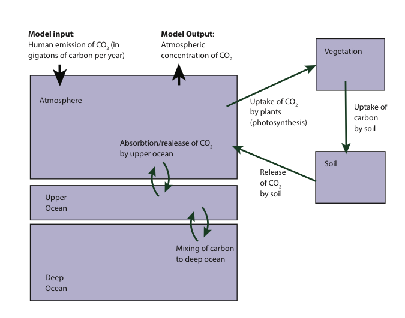
Carbon dioxide emissions (Eco2) enter the atmosphere, increasing the total amount of atmospheric carbon (Cat). This carbon leaves the atmosphere by dissolving into the upper ocean (Cup) and being taken up by plants (N) by photosynthesis.
The rate of transfer of carbon into the ocean is proportional to the difference between atmospheric and oceanic CO2 concentration. This rate also depends on the acidity of the ocean, which changes depending on the amount of stored carbon. Carbon can leave the upper ocean by mixing into the deep ocean.
The uptake of carbon by plants via photosynthesis depends on the atmospheric CO2 concentration. The carbon in plants turns into soil carbon over long timescales as vegetation decays. Some of the carbon in the soil eventually gets back into the atmosphere via its breakdown by bacteria.
These interactions are written down mathematically below:
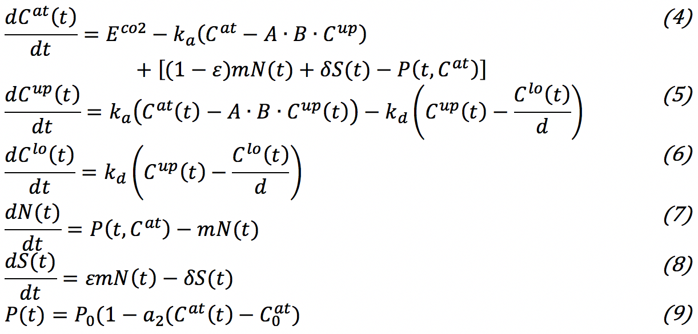
where Cat, Cup, Clo, N and S are the inventories of carbon dioxide (GtC) in the atmosphere, upper ocean and deep ocean, terrestrial vegetation and soil, respectively, P is net primary production by terrestrial plants (GtC/yr) and E is the human emissions of CO2 (GtC/yr).
If we specify emissions of CO2, these equations can tell us how the atmospheric concentration of CO2 changes over time. CO2 is a greenhouse gas which acts to trap heat emitted from the surface of the planet. More CO2 means that a greater amount of heat is trapped and the more energy is retained by the surface climate. This can be expressed mathematically as:
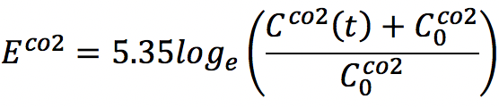
Where CoCO2 is the natural atmospheric concentration before humans started emitting CO2 into the atmosphere.
This relationship is logarithmic. This means that CO2 traps less heat as CO2 concentrations increase.
CO2 is a long lived greenhouse gas that takes hundreds of years to be removed from the atmosphere. As a result CO2 emitted today will still have an effect on the climate system hundreds of years from now (see the CO2 pulse experiment). Other greenhouse gases remain in the atmosphere for far shorter periods of time. The second most important greenhouse gas related to human activities is methane. Methane emissions are primarily related to waste management, changes in agriculture and the production of fossil fuels. The main way methane is removed from the atmosphere is through oxidation. Methane will typically last about 10 years in the atmosphere; as a result if we stopped producing methane today it would return to background concentrations in a few decades (see the CH4 pulse experiment).
Methane is modelled using a single box that represents the atmospheric store of methane. Methane emissions (ECH4) increase the methane concentration (CCH4) and the concentration decreases due to oxidation (in fact the rate of decay (τCH4) is not exactly exponential as it depends on the amount of methane in the atmosphere). The equation describing methane concentration in Carbonator is:
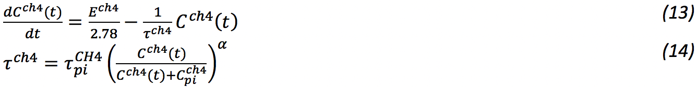
If we specify emissions of CH4, this equation can tell us how CH4 concentrations change in the atmosphere over time. CH4 is a greenhouse gas which acts to trap heat emitted from the surface of the planet. More CH4 means that a greater amount of heat is trapped and the more energy is retained by the surface climate. This can be expressed mathematically as:
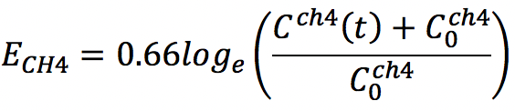
Where CoCH4 is the natural atmospheric concentration before humans started emitting CH4 into the atmosphere.
As with CO2, this relationship is logarithmic. This means that CH4 has a diminishing effect on the additional energy as CH4 concentrations increase.
Volcanoes inject large quantities of particulate matter (aerosols) high into the atmosphere (the stratosphere). These fall out of the atmosphere over the course of a few years. These particles are reflective, reflecting away solar energy. As a result, they have a cooling effect. In Carbonator 2 volcanic aerosols are specified directly as a radiative forcing time series (W/m²), which you can edit in Advanced mode.
Burning of fossil fuels and deforestation releases particulate matter (human aerosols) into the lower atmosphere. These particles are washed out of the atmosphere on the timescale of a few days, primarily by rainfall. Like volcanic aerosols, human aerosols reflect away solar energy and so have a cooling effect. Because the removal of human aerosols from the atmosphere is so fast, the aerosol forcing closely follows the emission rate: if you stop emissions, the cooling effect disappears almost instantly (see the Geoengineering Failure experiment). In Carbonator 2 human aerosols are specified as a radiative forcing time series (W/m²).
The primary causes of sea level rise are the thermal expansion of water (the volume of water increases if temperature increases) and the melting of land ice (primarily the ice sheets on Antarctica and Greenland and glaciers around the world). Carbonator models both contributions.
To use the model, your computer needs to solve the various equations that make up the Carbonator climate model. To demonstrate how this works, click below.
To demonstrate how this works, let’s use a simpler model: a single box model of the climate system. In this case, we are going to ignore the effect of the deep ocean (i.e. we assume that no heat is transferred from the upper to the lower ocean). Also instead of having several inputs, our input is going to be the total incoming energy (Ein), so that we don’t need to worry about the CO2, methane and other sub-models. Mathematically our model can be written:
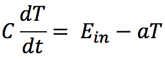
This says, the change in the energy content in our box (which represents the climate system) per second equals the energy coming in per second (the model input) minus the energy emitted out to space per second (which depends on the surface temperature). C and a are constants.
Using this equation, if we know Ein, we want to be able to calculate how the surface temperature changes in time. This means that we need to integrate this equation to find T at different times.
If Ein could be described as a simple mathematical function we could probably integrate the equation analytically. For example if Ein were a constant (i.e. incoming energy stays the same over time), then:
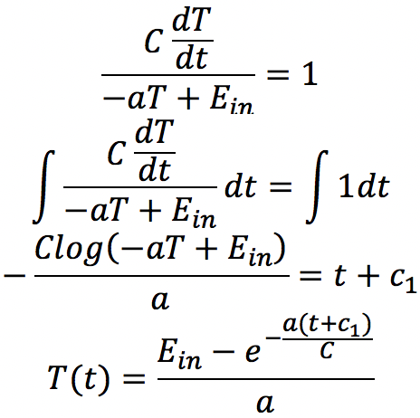
We also need to know the temperature at the start of our simulation T(0). For all Carbonator simulations we calculate temperature relative to the start of the simulation, so T(0) = 0. Substituting this into the equation:
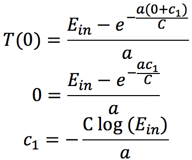
And substituting back for c1:
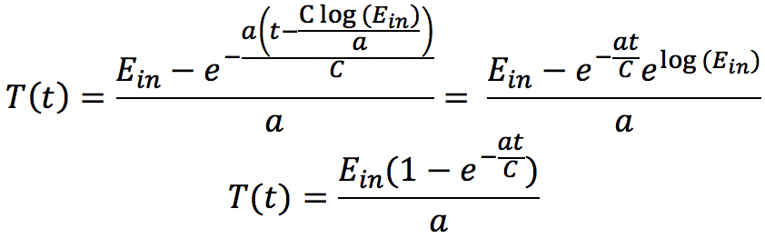
As an example, if we use the Carbonator values a = 1 W/m²/K, C = 6 W yr/m²/K, and there is a sudden jump in the energy coming in (e.g. the sun gets a little bit stronger), Ein = 1 W/m², then the temperature response will be:
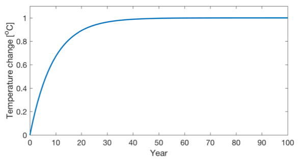
However, Ein may change with time, i.e.:
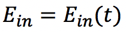
For example, imagine that over time the sun gets stronger, increasing the incoming energy, but during this period there is a volcano that causes a decrease in the incoming energy (through reflection) for a short period:
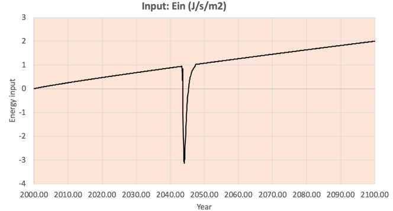
Now we can’t integrate this in the normal way. Instead we do what’s called a numerical integration. This only provides an approximate answer, but if we do it right then the approximation can be as accurate as we want it to be. So how does this work?
Let’s start with dT/dt, what does this mean? It’s the gradient in T with respect to time. Let’s look at this on a graph of temperature versus time:
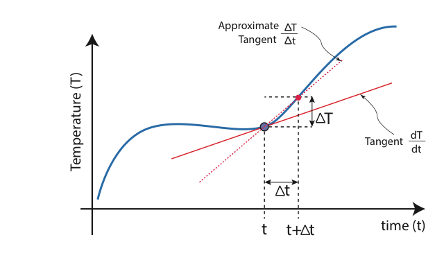
The gradient dT/dt at time t is the tangent to the line. How do we calculate the value of the gradient? We can get an approximate answer by calculating:
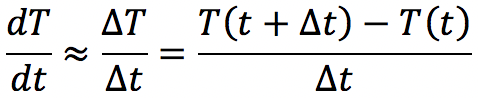
To make this approximation better you just need to make the step smaller. In fact if the step shrinks to zero then the answer is exact (this is the basis of calculus). OK, let’s stick with our approximation:
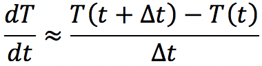
Let’s substitute this into our model equation:
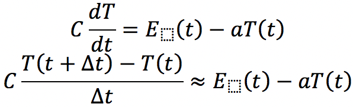
A little rearranging and we get:
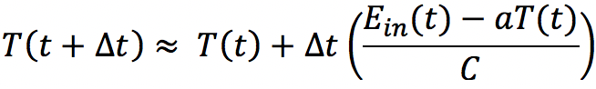
What does this equation say? Let’s imagine t is the time now. The equation says if we know what the temperature is now and how much energy is entering the climate system now, we can estimate what the temperature will be a little way in the future.
Using our estimate for the temperature a little way into the future we can use the same equation to estimate the temperature a little further in the future. By using this equation multiple times we can estimate the temperature progressively further into the future. If the (time) steps that we use to make these calculations are not too large, our answer can be quite accurate.
We can now use computer code to do this calculation multiple times. In fact we can even run this model in an Excel spreadsheet. Check this out to see how temperature changes in response to the Ein shown above; or modify Ein to create your own scenario.